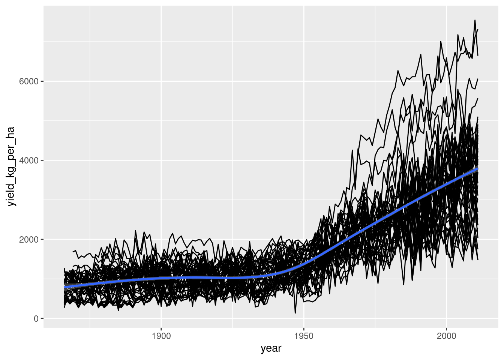
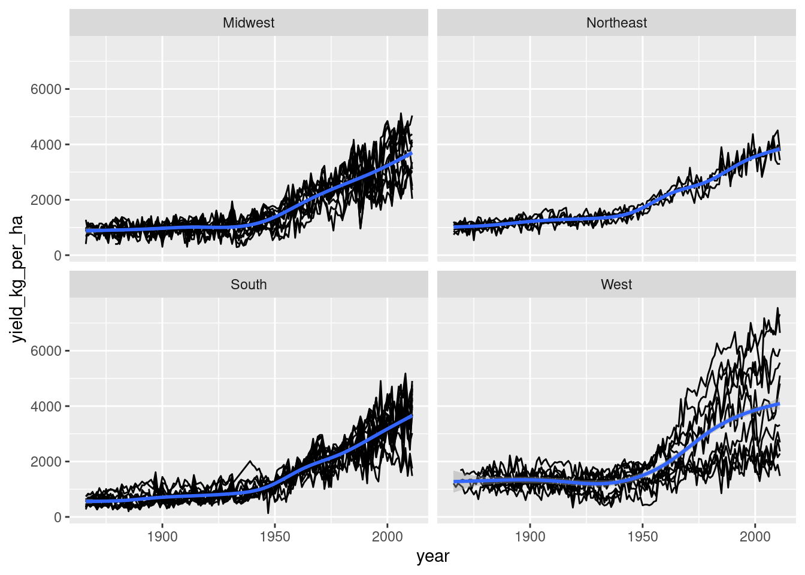

One way to make your code more readable is to be careful about the order you pass arguments when you call functions, and whether you pass the arguments by position or by name.
gold_medals, a numeric vector of the number of gold medals won by each country in the 2016 Summer Olympics, is provided.
For convenience, the arguments of median() and rank() are displayed using args(). Setting rank()’s na.last argument to “keep” means “keep the rank of NA values as NA”.
Best practice for calling functions is to include them in the order shown by args(), and to only name rare arguments.
USA GBR CHN RUS GER JPN FRA KOR ITA AUS NED HUN BRA ESP KEN JAM CRO CUB NZL CAN
46 27 26 19 17 12 10 9 8 8 8 8 7 7 6 6 5 5 4 4
UZB KAZ COL SUI IRI GRE ARG DEN SWE RSA UKR SRB POL PRK BEL THA SVK GEO AZE BLR
4 3 3 3 3 3 3 2 2 2 2 2 2 2 2 2 2 2 1 1
TUR ARM CZE ETH SLO INA ROU BRN VIE TPE BAH IOA CIV FIJ JOR KOS PUR SIN TJK MAS
1 1 1 1 1 1 1 1 1 1 1 1 1 1 1 1 1 1 1 0
MEX VEN ALG IRL LTU BUL IND MGL BDI GRN NIG PHI QAT NOR EGY TUN ISR AUT DOM EST
0 0 0 0 0 0 0 0 0 0 0 0 0 0 0 0 0 0 0 0
FIN MAR NGR POR TTO UAE IOC
0 0 0 0 0 0 NA
# Note the arguments to median()args(median)
function (x, na.rm = FALSE, ...)
NULL
# Rewrite this function call, following best practicesmedian(gold_medals, na.rm =TRUE)
# Rewrite this function call, following best practicesrank(-gold_medals, na.last ="keep", ties.method="min")
USA GBR CHN RUS GER JPN FRA KOR ITA AUS NED HUN BRA ESP KEN JAM CRO CUB NZL CAN
1 2 3 4 5 6 7 8 9 9 9 9 13 13 15 15 17 17 19 19
UZB KAZ COL SUI IRI GRE ARG DEN SWE RSA UKR SRB POL PRK BEL THA SVK GEO AZE BLR
19 22 22 22 22 22 22 28 28 28 28 28 28 28 28 28 28 28 39 39
TUR ARM CZE ETH SLO INA ROU BRN VIE TPE BAH IOA CIV FIJ JOR KOS PUR SIN TJK MAS
39 39 39 39 39 39 39 39 39 39 39 39 39 39 39 39 39 39 39 60
MEX VEN ALG IRL LTU BUL IND MGL BDI GRN NIG PHI QAT NOR EGY TUN ISR AUT DOM EST
60 60 60 60 60 60 60 60 60 60 60 60 60 60 60 60 60 60 60 60
FIN MAR NGR POR TTO UAE IOC
60 60 60 60 60 60 NA
Your first function: tossing a coin
Time to write your first function! It’s a really good idea when writing functions to start simple. You can always make a function more complicated later if it’s really necessary, so let’s not worry about arguments for now.
coin_sides <-c("head", "tail")# Sample from coin_sides oncesample(coin_sides, 1)
[1] "tail"
# Your functions, from previous stepstoss_coin <-function() { coin_sides <-c("head", "tail")sample(coin_sides, 1)}# Call your functiontoss_coin()
[1] "tail"
Inputs to functions
Most functions require some sort of input to determine what to compute. The inputs to functions are called arguments. You specify them inside the parentheses after the word “function.”
As mentioned in the video, the following exercises assume that you are using sample() to do random sampling.
# Update the function to return n coin tossestoss_coin <-function(n_flips) { coin_sides <-c("head", "tail")sample(coin_sides, n_flips, replace =TRUE)}# Generate 10 coin tossestoss_coin(1000) %>%table() %>%prop.table()
.
head tail
0.493 0.507
Multiple inputs to functions
If a function should have more than one argument, list them in the function signature, separated by commas. To solve this exercise, you need to know how to specify sampling weights to sample(). Set the prob argument to a numeric vector with the same length as x. Each value of prob is the probability of sampling the corresponding element of x, so their values add up to one. In the following example, each sample has a 20% chance of “bat”, a 30% chance of “cat” and a 50% chance of “rat”.
# Update the function so heads have probability p_headtoss_coin <-function(n_flips, p_head) { coin_sides <-c("head", "tail")# Define a vector of weights weights <-c(p_head,1- p_head)# Modify the sampling to be weightedsample(coin_sides, n_flips, replace =TRUE, prob = weights)}# Generate 10 coin tossestoss_coin(10,p_head=.8)
Recall that data arguments are what a function computes on, and detail arguments advise on how the computation should be performed. Each of the arguments to t.test() is shown, along with a brief description of it.
Renaming GLM
R’s generalized linear regression function, glm(), suffers the same usability problems as lm(): its name is an acronym, and its formula and data arguments are in the wrong order. To solve this exercise, you need to know two things about generalized linear regression: glm() formulas are specified like lm() formulas: response is on the left, and explanatory variables are added on the right. To model count data, set glm()’s family argument to poisson, making it a Poisson regression. Here you’ll use data on the number of yearly visits to Snake River at Jackson Hole, Wyoming, snake_river_visits.
snake_river_visits <-read_rds("snake_river_visits.rds")# From previous steprun_poisson_regression <-function(data, formula) {glm(formula, data, family = poisson)}# Re-run the Poisson regression, using your functionmodel <- snake_river_visits %>%run_poisson_regression(n_visits ~ gender + income + travel)# Run this to see the predictionssnake_river_visits %>%mutate(predicted_n_visits =predict(model, ., type ="response"))%>%arrange(desc(predicted_n_visits)) %>%head() %>%kable()
n_visits
gender
income
travel
predicted_n_visits
80
female
[$0,$25k]
[0h,0.25h]
86.5186
35
female
[$0,$25k]
[0h,0.25h]
86.5186
50
female
[$0,$25k]
[0h,0.25h]
86.5186
125
female
[$0,$25k]
[0h,0.25h]
86.5186
24
female
[$0,$25k]
[0h,0.25h]
86.5186
100
female
[$0,$25k]
[0h,0.25h]
86.5186
Numeric defaults
cut_by_quantile() converts a numeric vector into a categorical variable where quantiles define the cut points. This is a useful function, but at the moment you have to specify five arguments to make it work. This is too much thinking and typing. By specifying default arguments, you can make it easier to use. Let’s start with n, which specifies how many categories to cut x into.A numeric vector of the number of visits to Snake River is provided as n_visits.
# Set the default for n to 5n_visits = snake_river_visits$n_visitscut_by_quantile <-function(x, n=5, na.rm, labels, interval_type) { probs <-seq(0, 1, length.out = n +1) qtiles <-quantile(x, probs, na.rm = na.rm, names =FALSE) right <-switch(interval_type, "(lo, hi]"=TRUE, "[lo, hi)"=FALSE)cut(x, qtiles, labels = labels, right = right, include.lowest =TRUE)}# Remove the n argument from the callcut_by_quantile( n_visits, na.rm =FALSE, labels =c("very low", "low", "medium", "high", "very high"),interval_type ="(lo, hi]") %>%head()
[1] very low very low very low very low very low very low
Levels: very low low medium high very high
Logical defaults
cut_by_quantile() is now slightly easier to use, but you still always have to specify the na.rm argument. This removes missing values – it behaves the same as the na.rm argument to mean() or sd().
Where functions have an argument for removing missing values, the best practice is to not remove them by default (in case you hadn’t spotted that you had missing values). That means that the default for na.rm should be FALSE.
# Set the default for na.rm to FALSEcut_by_quantile <-function(x, n =5, na.rm =FALSE, labels, interval_type) { probs <-seq(0, 1, length.out = n +1) qtiles <-quantile(x, probs, na.rm = na.rm, names =FALSE) right <-switch(interval_type, "(lo, hi]"=TRUE, "[lo, hi)"=FALSE)cut(x, qtiles, labels = labels, right = right, include.lowest =TRUE)}# Remove the na.rm argument from the callcut_by_quantile( n_visits, labels =c("very low", "low", "medium", "high", "very high"),interval_type ="(lo, hi]") %>%head()
[1] very low very low very low very low very low very low
Levels: very low low medium high very high
NULL defaults
The cut() function used by cut_by_quantile() can automatically provide sensible labels for each category. The code to generate these labels is pretty complicated, so rather than appearing in the function signature directly, its labels argument defaults to NULL, and the calculation details are shown on the ?cut help page.
# Set the default for labels to NULLcut_by_quantile <-function(x, n =5, na.rm =FALSE, labels=NULL, interval_type) { probs <-seq(0, 1, length.out = n +1) qtiles <-quantile(x, probs, na.rm = na.rm, names =FALSE) right <-switch(interval_type, "(lo, hi]"=TRUE, "[lo, hi)"=FALSE)cut(x, qtiles, labels = labels, right = right, include.lowest =TRUE)}# Remove the labels argument from the callcut_by_quantile( n_visits,#labels = c("very low", "low", "medium", "high", "very high"),interval_type ="(lo, hi]") %>%head()
When cutting up a numeric vector, you need to worry about what happens if a value lands exactly on a boundary. You can either put this value into a category of the lower interval or the higher interval. That is, you can choose your intervals to include values at the top boundary but not the bottom (in mathematical terminology, “open on the left, closed on the right”, or (lo, hi]). Or you can choose the opposite (“closed on the left, open on the right”, or [lo, hi)). cut_by_quantile() should allow these two choices.
Free hint: In the console, type head(rank) to see the start of rank()’s definition, and look at the ties.method argument.
# Set the categories for interval_type to "(lo, hi]" and "[lo, hi)"cut_by_quantile <-function(x, n =5, na.rm =FALSE, labels =NULL, interval_type=c("(lo, hi]", "[lo, hi)")) {# Match the interval_type argument interval_type <-match.arg(interval_type) probs <-seq(0, 1, length.out = n +1) qtiles <-quantile(x, probs, na.rm = na.rm, names =FALSE) right <-switch(interval_type, "(lo, hi]"=TRUE, "[lo, hi)"=FALSE)cut(x, qtiles, labels = labels, right = right, include.lowest =TRUE)}# Remove the interval_type argument from the callcut_by_quantile(n_visits) %>%head()
The harmonic mean is the reciprocal of the arithmetic mean of the reciprocal of the data. That is
The harmonic mean is often used to average ratio data. You’ll be using it on the price/earnings ratio of stocks in the Standard and Poor’s 500 index, provided as std_and_poor500. Price/earnings ratio is a measure of how expensive a stock is.
The dplyr package is loaded.
std_and_poor500 <-read_rds("std_and_poor500_with_pe_2019-06-21.rds")# Look at the Standard and Poor 500 dataglimpse(std_and_poor500)
# Write a function to calculate the reciprocal# From previous stepsget_reciprocal <-function(x) {1/ x}calc_harmonic_mean <-function(x) { x %>%get_reciprocal() %>%mean() %>%get_reciprocal()}std_and_poor500 %>%# Group by sectorgroup_by(sector) %>%# Summarize, calculating harmonic mean of P/E ratiosummarise(hmean_pe_ratio =calc_harmonic_mean(pe_ratio))
# A tibble: 11 × 2
sector hmean_pe_ratio
<chr> <dbl>
1 Communication Services NA
2 Consumer Discretionary NA
3 Consumer Staples NA
4 Energy NA
5 Financials NA
6 Health Care NA
7 Industrials NA
8 Information Technology NA
9 Materials NA
10 Real Estate 32.5
11 Utilities NA
Dealing with missing values
In the last exercise, many sectors had an NA value for the harmonic mean. It would be useful for your function to be able to remove missing values before calculating.
Rather than writing your own code for this, you can outsource this functionality to mean().
The dplyr package is loaded.
# From previous stepcalc_harmonic_mean <-function(x, na.rm =FALSE) { x %>%get_reciprocal() %>%mean(na.rm = na.rm) %>%get_reciprocal()}std_and_poor500 %>%# Group by sectorgroup_by(sector) %>%# Summarize, calculating harmonic mean of P/E ratiosummarise(hmean_pe_ratio =calc_harmonic_mean(pe_ratio, na.rm =TRUE))
# A tibble: 11 × 2
sector hmean_pe_ratio
<chr> <dbl>
1 Communication Services 17.5
2 Consumer Discretionary 15.2
3 Consumer Staples 19.8
4 Energy 13.7
5 Financials 12.9
6 Health Care 26.6
7 Industrials 18.2
8 Information Technology 21.6
9 Materials 16.3
10 Real Estate 32.5
11 Utilities 23.9
Passing arguments with …
Rather than explicitly giving calc_harmonic_mean() and na.rm argument, you can use … to simply “pass other arguments” to mean().
The dplyr package is loaded.
calc_harmonic_mean <-function(x, ...) { x %>%get_reciprocal() %>%mean(...) %>%get_reciprocal()}std_and_poor500 %>%# Group by sectorgroup_by(sector) %>%# Summarize, calculating harmonic mean of P/E ratiosummarise(hmean_pe_ratio =calc_harmonic_mean(pe_ratio, na.rm =TRUE))
# A tibble: 11 × 2
sector hmean_pe_ratio
<chr> <dbl>
1 Communication Services 17.5
2 Consumer Discretionary 15.2
3 Consumer Staples 19.8
4 Energy 13.7
5 Financials 12.9
6 Health Care 26.6
7 Industrials 18.2
8 Information Technology 21.6
9 Materials 16.3
10 Real Estate 32.5
11 Utilities 23.9
Throwing errors with bad arguments
If a user provides a bad input to a function, the best course of action is to throw an error letting them know. The two rules are
Throw the error message as soon as you realize there is a problem (typically at the start of the function). Make the error message easily understandable. You can use the assert_*() functions from assertive to check inputs and throw errors when they fail.
library(assertive)calc_harmonic_mean <-function(x, na.rm =FALSE) {# Assert that x is numericassert_is_numeric(x) x %>%get_reciprocal() %>%mean(na.rm = na.rm) %>%get_reciprocal()}# See what happens when you pass it strings#calc_harmonic_mean(std_and_poor500$sector)
Custom error logic
Sometimes the assert_*() functions in assertive don’t give the most informative error message. For example, the assertions that check if a number is in a numeric range will tell the user that a value is out of range, but the won’t say why that’s a problem. In that case, you can use the is_*() functions in conjunction with messages, warnings, or errors to define custom feedback.
The harmonic mean only makes sense when x has all positive values. (Try calculating the harmonic mean of one and minus one to see why.) Make sure your users know this!
calc_harmonic_mean <-function(x, na.rm =FALSE) {assert_is_numeric(x)# Check if any values of x are non-positiveif(any(is_non_positive(x), na.rm =TRUE)) {# Throw an errorstop("x contains non-positive values, so the harmonic mean makes no sense.") } x %>%get_reciprocal() %>%mean(na.rm = na.rm) %>%get_reciprocal()}# See what happens when you pass it negative numbers#calc_harmonic_mean(std_and_poor500$pe_ratio - 20)
Fixing function arguments
The harmonic mean function is almost complete. However, you still need to provide some checks on the na.rm argument. This time, rather than throwing errors when the input is in an incorrect form, you are going to try to fix it.
na.rm should be a logical vector with one element (that is, TRUE, or FALSE).
The assertive package is loaded for you.
# Update the function definition to fix the na.rm argumentcalc_harmonic_mean <-function(x, na.rm =FALSE) {assert_is_numeric(x)if(any(is_non_positive(x), na.rm =TRUE)) {stop("x contains non-positive values, so the harmonic mean makes no sense.") }# Use the first value of na.rm, and coerce to logical na.rm <-coerce_to(use_first(na.rm), target_class ="logical") x %>%get_reciprocal() %>%mean(na.rm = na.rm) %>%get_reciprocal()}# See what happens when you pass it malformed na.rmcalc_harmonic_mean(std_and_poor500$pe_ratio, na.rm =1:5)
[1] 18.23871
Returning early
Sometimes, you don’t need to run through the whole body of a function to get the answer. In that case you can return early from that function using return().
To check if x is divisible by n, you can use is_divisible_by(x, n) from assertive.
Alternatively, use the modulo operator, %%. x %% n gives the remainder when dividing x by n, so x %% n == 0 determines whether x is divisible by n. Try 1:10 %% 3 == 0 in the console.
To solve this exercise, you need to know that a leap year is every 400th year (like the year 2000) or every 4th year that isn’t a century (like 1904 but not 1900 or 1905).
assertive is loaded.
is_leap_year <-function(year) {# If year is div. by 400 return TRUEif(is_divisible_by(year, 400)) {return(TRUE) }# If year is div. by 100 return FALSEif(is_divisible_by(year, 100)) {return(FALSE) } # If year is div. by 4 return TRUEif(is_divisible_by(year, 4)) {return(TRUE)# Otherwise return FALSE } elsereturn(FALSE)}is_leap_year(year =1900)
[1] FALSE
Returning invisibly
When the main purpose of a function is to generate output, like drawing a plot or printing something in the console, you may not want a return value to be printed as well. In that case, the value should be invisibly returned.
The base R plot function returns NULL, since its main purpose is to draw a plot. This isn’t helpful if you want to use it in piped code: instead it should invisibly return the plot data to be piped on to the next step.
Recall that plot() has a formula interface: instead of giving it vectors for x and y, you can specify a formula describing which columns of a data frame go on the x and y axes, and a data argument for the data frame. Note that just like lm(), the arguments are the wrong way round because the detail argument, formula, comes before the data argument.
# Using cars, draw a scatter plot of dist vs. speedplt_dist_vs_speed <-plot(dist ~ speed, data = cars)# Oh no! The plot object is NULLplt_dist_vs_speed
NULL
# Define a pipeable plot fn with data and formula argspipeable_plot <-function(data, formula) {# Call plot() with the formula interfaceplot(formula, data)# Invisibly return the input datasetinvisible(head(data))}# Draw the scatter plot of dist vs. speed againplt_dist_vs_speed <- cars %>%pipeable_plot(dist ~ speed)
# Now the plot object has a valueplt_dist_vs_speed
Functions can only return one value. If you want to return multiple things, then you can store them all in a list.
If users want to have the list items as separate variables, they can assign each list element to its own variable using zeallot’s multi-assignment operator, %<-%.
glance(), tidy(), and augment() each take the model object as their only argument.
The Poisson regression model of Snake River visits is available as model. broom and zeallot are loaded.
library(zeallot)library(broom)model <-glm(n_visits ~ gender + income + travel, data =snake_river_visits )# From previous stepgroom_model <-function(model) {list(model =glance(model),coefficients =tidy(model),observations =augment(model) )}# Call groom_model on model, assigning to 3 variablesc(mdl, cff, obs) %<-%groom_model(model)# See these individual variablesmdl; cff; obs
Sometimes you want the return multiple things from a function, but you want the result to have a particular class (for example, a data frame or a numeric vector), so returning a list isn’t appropriate. This is common when you have a result plus metadata about the result. (Metadata is “data about the data”. For example, it could be the file a dataset was loaded from, or the username of the person who created the variable, or the number of iterations for an algorithm to converge.)
In that case, you can store the metadata in attributes. Recall the syntax for assigning attributes is as follows.
attr(object, “attribute_name”) <- attribute_value
pipeable_plot <-function(data, formula) {plot(formula, data)# Add a "formula" attribute to dataattr(data, "formula") <- formulainvisible(data)}# From previous exerciseplt_dist_vs_speed <- cars %>%pipeable_plot(dist ~ speed)
# Examine the structure of the resultplt_dist_vs_speed
Environments are used to store other variables. Mostly, you can think of them as lists, but there’s an important extra property that is relevant to writing functions. Every environment has a parent environment (except the empty environment, at the root of the environment tree). This determines which variables R know about at different places in your code.
Facts about the Republic of South Africa are contained in capitals, national_parks, and population.
# From previous stepsrsa_lst <-list(capitals =c("J Burg", "Capetown"),national_parks =c("Krug", "Iddo"),population =30000)rsa_env <-list2env(rsa_lst)# Find the parent environment of rsa_envparent <-parent.env(rsa_env)# Print its nameenvironmentName(parent)
[1] "R_GlobalEnv"
Do variables exist? If R cannot find a variable in the current environment, it will look in the parent environment, then the grandparent environment, and so on until it finds it.
rsa_env has been modified so it includes capitals and national_parks, but not population.
# Compare the contents of the global environment and rsa_envls.str(globalenv())
calc_harmonic_mean : function (x, na.rm = FALSE)
cff : tibble [7 × 5] (S3: tbl_df/tbl/data.frame)
coin_sides : chr [1:2] "head" "tail"
cut_by_quantile : function (x, n = 5, na.rm = FALSE, labels = NULL, interval_type = c("(lo, hi]",
"[lo, hi)"))
gd_nms : chr [1:87] "USA" "GBR" "CHN" "RUS" "GER" "JPN" "FRA" "KOR" "ITA" "AUS" ...
get_reciprocal : function (x)
gold_medals : Named int [1:87] 46 27 26 19 17 12 10 9 8 8 ...
groom_model : function (model)
is_leap_year : function (year)
mdl : tibble [1 × 8] (S3: tbl_df/tbl/data.frame)
model : List of 31
$ coefficients : Named num [1:7] 61.54 10.85 -1.95 -19.33 -18.62 ...
$ residuals : Named num [1:346] -6.67 -7.67 -15.33 3.18 -6.95 ...
$ fitted.values : Named num [1:346] 8.67 8.67 16.33 -2.18 7.95 ...
$ effects : Named num [1:346] -509.9 -174.8 167.5 -46.6 162.4 ...
$ R : num [1:7, 1:7] -18.6 0 0 0 0 ...
$ rank : int 7
$ qr :List of 5
$ family :List of 12
$ linear.predictors: Named num [1:346] 8.67 8.67 16.33 -2.18 7.95 ...
$ deviance : num 636485
$ aic : num 3599
$ null.deviance : num 820296
$ iter : int 2
$ weights : Named num [1:346] 1 1 1 1 1 1 1 1 1 1 ...
$ prior.weights : Named num [1:346] 1 1 1 1 1 1 1 1 1 1 ...
$ df.residual : int 339
$ df.null : int 345
$ y : Named num [1:346] 2 1 1 1 1 1 80 104 55 350 ...
$ converged : logi TRUE
$ boundary : logi FALSE
$ model :'data.frame': 346 obs. of 4 variables:
$ na.action : 'omit' Named int [1:64] 1 2 3 4 5 6 7 8 9 10 ...
$ call : language glm(formula = n_visits ~ gender + income + travel, data = snake_river_visits)
$ formula :Class 'formula' language n_visits ~ gender + income + travel
$ terms :Classes 'terms', 'formula' language n_visits ~ gender + income + travel
$ data :'data.frame': 410 obs. of 4 variables:
$ offset : NULL
$ control :List of 3
$ method : chr "glm.fit"
$ contrasts :List of 3
$ xlevels :List of 3
n_visits : num [1:410] 0 0 0 0 0 0 0 0 0 0 ...
obs : tibble [346 × 11] (S3: tbl_df/tbl/data.frame)
parent : <environment: R_GlobalEnv>
pipeable_plot : function (data, formula)
plt_dist_vs_speed : 'data.frame': 50 obs. of 2 variables:
$ speed: num 4 4 7 7 8 9 10 10 10 11 ...
$ dist : num 2 10 4 22 16 10 18 26 34 17 ...
rsa_env : <environment: 0x565000cb9880>
rsa_lst : List of 3
$ capitals : chr [1:2] "J Burg" "Capetown"
$ national_parks: chr [1:2] "Krug" "Iddo"
$ population : num 30000
run_poisson_regression : function (data, formula)
snake_river_visits : 'data.frame': 410 obs. of 4 variables:
$ n_visits: num 0 0 0 0 0 0 0 0 0 0 ...
$ gender : Factor w/ 2 levels "male","female": 1 1 1 2 1 2 2 2 1 1 ...
$ income : Factor w/ 4 levels "[$0,$25k]","($25k,$55k]",..: 4 2 4 2 4 2 4 4 4 4 ...
$ travel : Factor w/ 3 levels "[0h,0.25h]","(0.25h,4h]",..: NA NA NA NA NA NA NA NA NA NA ...
std_and_poor500 : 'data.frame': 505 obs. of 5 variables:
$ symbol : chr "MMM" "ABT" "ABBV" "ABMD" ...
$ company : chr "3M Company" "Abbott Laboratories" "AbbVie Inc." "ABIOMED Inc" ...
$ sector : chr "Industrials" "Health Care" "Health Care" "Health Care" ...
$ industry: chr "Industrial Conglomerates" "Health Care Equipment" "Pharmaceuticals" "Health Care Equipment" ...
$ pe_ratio: num 18.3 57.7 22.4 45.6 27 ...
toss_coin : function (n_flips, p_head)
ls.str(rsa_env)
capitals : chr [1:2] "J Burg" "Capetown"
national_parks : chr [1:2] "Krug" "Iddo"
population : num 30000
# Does population exist in rsa_env?exists("population", envir = rsa_env)
[1] TRUE
# Does population exist in rsa_env, ignoring inheritance?exists("population", envir = rsa_env, inherits =FALSE)
[1] TRUE
Converting areas to metric 1
In this chapter, you’ll be working with grain yield data from the United States Department of Agriculture, National Agricultural Statistics Service. Unfortunately, they report all areas in acres. So, the first thing you need to do is write some utility functions to convert areas in acres to areas in hectares.
To solve this exercise, you need to know the following:
There are 4840 square yards in an acre. There are 36 inches in a yard and one inch is 0.0254 meters. There are 10000 square meters in a hectare.
# Write a function to convert acres to sq. yardsacres_to_sq_yards <-function(acres) { acres *4840}# Write a function to convert yards to metersyards_to_meters <-function(yards){ yards *36*0.0254}# Write a function to convert sq. meters to hectares# Write a function to convert yards to meterssq_meters_to_hectares <-function(sq_meters){ sq_meters/10000}
Converting areas to metric 2
You’re almost there with creating a function to convert acres to hectares. You need another utility function to deal with getting from square yards to square meters. Then, you can bring everything together to write the overall acres-to-hectares conversion function. Finally, in the next exercise you’ll be calculating area conversions in the denominator of a ratio, so you’ll need a harmonic acre-to-hectare conversion function.
Free hints: magrittr’s raise_to_power() will be useful here. The last step is similar to Chapter 2’s Harmonic Mean.
The three utility functions from the last exercise (acres_to_sq_yards(), yards_to_meters(), and sq_meters_to_hectares()) are available, as is your get_reciprocal() from Chapter 2. magrittr is loaded.
# Write a function to convert sq. yards to sq. meterssq_yards_to_sq_meters <-function(sq_yards) { sq_yards %>%# Take the square rootsqrt() %>%# Convert yards to metersyards_to_meters() %>%# Square itraise_to_power(2)}# Load the function from the previous step#load_step2()# Write a function to convert acres to hectaresacres_to_hectares <-function(acres) { acres %>%# Convert acres to sq yardsacres_to_sq_yards() %>%# Convert sq yards to sq meterssq_yards_to_sq_meters() %>%# Convert sq meters to hectaressq_meters_to_hectares()}# Define a harmonic acres to hectares functionharmonic_acres_to_hectares <-function(acres) { acres %>%# Get the reciprocalget_reciprocal() %>%# Convert acres to hectares acres_to_hectares %>%# Get the reciprocal againget_reciprocal()}
Converting yields to metric
The yields in the NASS corn data are also given in US units, namely bushels per acre. You’ll need to write some more utility functions to convert this unit to the metric unit of kg per hectare.
Bushels historically meant a volume of 8 gallons, but in the context of grain, they are now defined as masses. This mass differs for each grain! To solve this exercise, you need to know these facts.
One pound (lb) is 0.45359237 kilograms (kg). One bushel is 48 lbs of barley, 56 lbs of corn, or 60 lbs of wheat. magrittr is loaded.
library(magrittr)# Write a function to convert lb to kglbs_to_kgs <-function(lbs){ lbs *0.45359237}# Write a function to convert bushels to lbsbushels_to_lbs <-function(bushels, crop) {# Define a lookup table of scale factorsc(barley =48, corn =56, wheat =60) %>%# Extract the value for the crop magrittr::extract(crop) %>%# Multiply by the no. of bushelsmultiply_by(bushels)}# Write a function to convert bushels to kgbushels_to_kgs <-function(bushels, crop) { bushels %>%# Convert bushels to lbs for this cropbushels_to_lbs(crop) %>%# Convert lbs to kgslbs_to_kgs()}# Write a function to convert bushels/acre to kg/habushels_per_acre_to_kgs_per_hectare <-function(bushels_per_acre, crop =c("barley", "corn", "wheat")) {# Match the crop argument crop <-match.arg(crop) bushels_per_acre %>%# Convert bushels to kgs for this cropbushels_to_kgs(crop) %>%# Convert harmonic acres to haharmonic_acres_to_hectares()}
Applying the unit conversion
Now that you’ve written some functions, it’s time to apply them! The NASS corn dataset is available, and you can fortify it (jargon for “adding new columns”) with metrics areas and yields.
This fortification process can also be turned in to a function, so you’ll define a function for this, and test it on the NASS wheat dataset.
corn %>%# Add some columnsmutate(# Convert farmed area from acres to hafarmed_area_ha =acres_to_hectares(farmed_area_acres),# Convert yield from bushels/acre to kg/hayield_kg_per_ha =bushels_per_acre_to_kgs_per_hectare( yield_bushels_per_acre,crop ="corn" ) ) %>%head()
# Wrap this code into a functionfortify_with_metric_units <-function(data, crop){ data %>%mutate(farmed_area_ha =acres_to_hectares(farmed_area_acres),yield_kg_per_ha =bushels_per_acre_to_kgs_per_hectare( yield_bushels_per_acre, crop = crop ) )}# Try it on the wheat datasetwheat <-fortify_with_metric_units(wheat, crop ="wheat")
Plotting yields over time
Now that the units have been dealt with, it’s time to explore the datasets. An obvious question to ask about each crop is, “how do the yields change over time in each US state?” Let’s draw a line plot to find out! ggplot2 is loaded, and corn and wheat datasets are available with metric units.
# Wrap this plotting code into a functionplot_yield_vs_year <-function(data){ggplot(data, aes(year, yield_kg_per_ha)) +geom_line(aes(group = state)) +geom_smooth()}# Test it on the wheat datasetplot_yield_vs_year(wheat)

A nation divided
The USA has a varied climate, so we might expect yields to differ between states. Rather than trying to reason about 50 states separately, we can use the USA Census Regions to get 9 groups.
The “Corn Belt”, where most US corn is grown is in the “West North Central” and “East North Central” regions. The “Wheat Belt” is in the “West South Central” region.
dplyr is loaded, the corn and wheat datasets are available, as is usa_census_regions.
# Inner join the corn dataset to usa_census_regions by statelibrary(data.table)usa_census_regions <-read_csv("usa_census_regions.csv")setnames(usa_census_regions, c("State", "Region"), c("state", "census_region"))View(usa_census_regions)# corn %>%# inner_join(usa_census_regions, by= "state")# Wrap this code into a functionfortify_with_census_region <-function(data){ data %>%inner_join(usa_census_regions, by ="state")}# Try it on the wheat datasetwheat <-fortify_with_census_region(wheat)
Plotting yields over time by region
So far, you have a function to plot yields over time for each crop, and you’ve added a census_region column to the crop datasets. Now you are ready to look at how the yields change over time in each region of the USA.
ggplot2 is loaded. corn and wheat have been fortified with census regions. plot_yield_vs_year() is available.
# Wrap this code into a functionplot_yield_vs_year_by_region <-function(data) {plot_yield_vs_year(data) +facet_wrap(vars(census_region))}# Try it on the wheat datasetplot_yield_vs_year_by_region(wheat)

Running a model
The smooth trend line you saw in the plots of yield over time use a generalized additive model (GAM) to determine where the line should lie. This sort of model is ideal for fitting nonlinear curves. So we can make predictions about future yields, let’s explicitly run the model. The syntax for running this GAM takes the following form.
gam(response ~ s(explanatory_var1) + explanatory_var2, data = dataset) Here, s() means “make the variable smooth”, where smooth very roughly means nonlinear.
mgcv and dplyr are loaded; the corn and wheat datasets are available.
# Wrap the model code into a functionlibrary(mgcv)run_gam_yield_vs_year_by_region <-function(data){gam(yield_kg_per_ha ~s(year) + census_region, data = data)}# Try it on the wheat datasetwheat_model <-run_gam_yield_vs_year_by_region(wheat)wheat_model
Family: gaussian
Link function: identity
Formula:
yield_kg_per_ha ~ s(year) + census_region
Estimated degrees of freedom:
6.93 total = 10.93
GCV score: 341585.5
Making yield predictions
The fun part of modeling is using the models to make predictions. You can do this using a call to predict(), in the following form.
predict(model, cases_to_predict, type = “response”) mgcv and dplyr are loaded; GAMs of the corn and wheat datasets are available as corn_model and wheat_model. A character vector of census regions is stored as census_regions.
census_regions <- wheat$census_region %>%unique()# Wrap this prediction code into a functionpredict_yields <-function(model, year){ predict_this <-data.table(year = year,census_region = census_regions ) pred_yield_kg_per_ha <-predict(model, predict_this, type ="response") predict_this %>%mutate(pred_yield_kg_per_ha = pred_yield_kg_per_ha)}# Try it on the wheat datasetpredict_yields(wheat_model, year =2050)
year census_region pred_yield_kg_per_ha
1: 2050 South <multi-column>
2: 2050 West <multi-column>
3: 2050 Northeast <multi-column>
4: 2050 Midwest <multi-column>
Do it all over again
Hopefully, by now, you’ve realized that the real benefit to writing functions is that you can reuse your code easily. Now you are going to rerun the whole analysis from this chapter on a new crop, barley. Since all the infrastructure is in place, that’s less effort than it sounds!
Barley prefers a cooler climate compared to corn and wheat and is commonly grown in the US mountain states of Idaho and Montana.
dplyr and ggplot2, and mgcv are loaded; fortify_with_metric_units(), fortify_with_census_region(), plot_yield_vs_year_by_region(), run_gam_yield_vs_year_by_region(), and predict_yields() are available.
fortified_barley <- barley %>%# Fortify with metric unitsfortify_with_metric_units() %>%# Fortify with census regionsfortify_with_census_region()# See the resultglimpse(fortified_barley)# From previous stepfortified_barley <- barley %>%fortify_with_metric_units() %>%fortify_with_census_region()fortified_barley %>%# Run a GAM of yield vs. year by region run_gam_yield_vs_year_by_region %>%# Make predictions of yields in 2050predict_yields(year =2050)